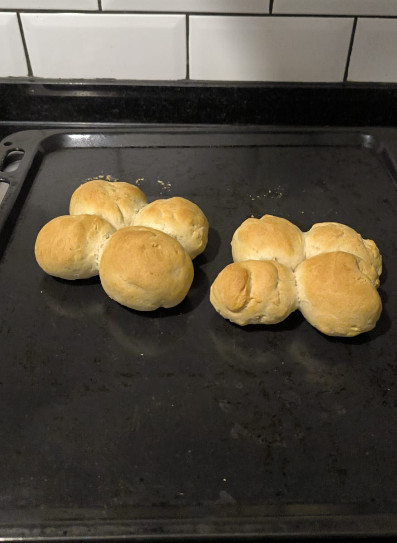

La marraqueta
que nunca se abrió
Un hombre. Medio kilo de harina. Un sueño.
Esta es la historia de Badu Lake y de los cuatro panes
que decidieron permanecer unidos para siempre.

Aquí va la foto original.img/marraqueta-badu.png
Capítulo único
La leyenda de los cuatro panes unidos
-
01
El origen del problema
Todo empezó como empiezan las grandes tragedias culinarias: con confianza. Badu Lake vio un video de treinta segundos, dijo "pero si es harina y agua no más", y cerró la aplicación antes de que llegara la parte importante.
-
02
El amasado de siete minutos
La receta pedía quince minutos de amasado. Badu amasó siete, se aburrió, y declaró la masa "lista, se nota". El gluten, que estaba recién organizándose, quedó a medio camino: ni elástico ni resignado. Ese fue el primer clavo del ataúd.
-
03
La marca tímida
Aquí está el crimen. La marraqueta se forma uniendo dos bollos y hundiendo una marca profunda, hasta casi cortar. Badu pasó el canto de una cuchara como quien acaricia un gato ajeno. Una rayita. Un gesto simbólico. La masa la interpretó como una sugerencia y la ignoró.
-
04
El horno sin vapor
Sin vapor, la corteza se sella antes de que el pan alcance a crecer. Es como ponerle cinturón de seguridad a alguien que quería saltar. Badu abrió el horno cuatro veces "para ver cómo iba". Cada apertura fue un pequeño invierno.
-
05
El veredicto de la bandeja
Salieron del horno dos bloques dorados, tibios, aromáticos y absolutamente incapaces de separarse. Cuatro panes unidos, tomados de la mano, enfrentando el mundo como una sola entidad.
"Igual se comen po." — Badu Lake, defendiendo su obra
-
06
El giro final
Y aquí viene lo peor —o lo mejor—: Badu tenía razón en el concepto. Una marraqueta de verdad es dos bollos unidos que al hornear se abren en cuatro. Él llegó al destino correcto. Simplemente nunca abrió la puerta.
Moraleja: la diferencia entre una marraqueta y cuatro panes unidos son tres milímetros de marca y un vaso de agua en el horno.
Para que no te pase
Receta de marraqueta (pan batido)
Rinde 8 marraquetas · Trabajo activo 30 min · Tiempo total ≈ 3 h
Preparación
-
Activar la levadura
Disuelve levadura y azúcar en la mitad del agua tibia. Espera 10 minutos: debe espumar. Si no espuma, la levadura está muerta y el pan también.
-
Mezclar
Harina y sal en un bol (la sal nunca directo sobre la levadura). Agrega la levadura activa y el resto del agua de a poco hasta formar una masa.
-
Amasar 15 minutos Badu falló aquí
Sí, quince. Estira, dobla, gira. Termina cuando la masa esté lisa y elástica: estirando un trozo debe verse la luz sin romperse.
-
Primera fermentación · 1 hora
Bol tapado, lugar tibio, hasta que doble su volumen.
-
Bollear y unir
Divide en 16 porciones de ~50 g. Bolea cada una y únelas de a dos, pegadas por el costado. Ahí nacen las 8 marraquetas.
-
La marca el momento crítico
Con el canto de una regla o un palo de amasar, hunde una marca perpendicular a la unión, hasta casi tocar la bandeja. Tiene que dar miedo. Si te da lástima, quedan cuatro panes unidos.
-
Segunda fermentación · 40 min
Sobre la bandeja, tapadas con un paño.
-
Hornear · 220 °C · 20 min Badu falló aquí también
Precalienta bien y pon una fuente con agua hirviendo abajo, o rocía las paredes con un pulverizador. El vapor es lo que abre la marraqueta. Y no abras el horno los primeros 15 minutos.
-
Enfriar sobre rejilla
Mínimo 20 minutos. Si la cortas caliente, la miga se apelmaza y todo el esfuerzo se va a la basura.
Modo carrera
Simulador de Marraqueta 3000
Tres etapas. Un solo intento por corrida. ¿Le ganas a Badu? Usa Espacio o toca la pantalla.
¿Te crees panadero?
Vas a amasar, marcar y hornear. Si lo haces mal, ya sabes en qué termina.
¡Machaca Espacio o toca la masa!
Detén el cuchillo en la zona dorada. 3 marcas restantes.
Mantén presionado para subir el fuego. Quédate en el verde.
Resultado
…
Ningún pan fue maltratado en la producción de este sitio. Badu Lake sí, un poco.